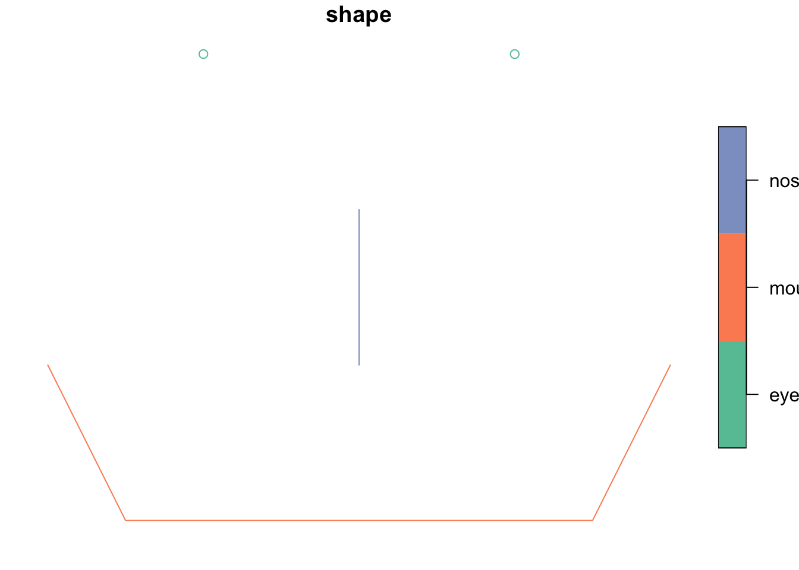
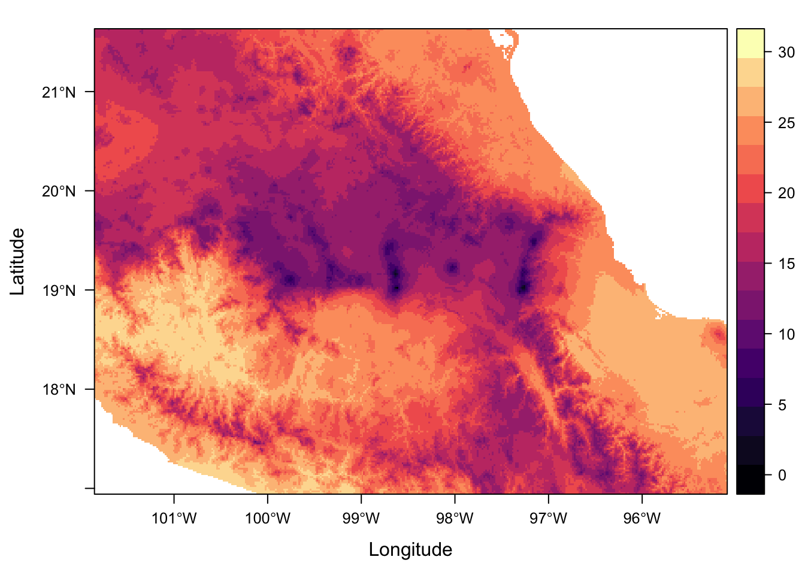

Last updated: 2018-09-04
workflowr checks: (Click a bullet for more information) ✔ R Markdown file: up-to-date
Great! Since the R Markdown file has been committed to the Git repository, you know the exact version of the code that produced these results.
✔ Environment: empty
Great job! The global environment was empty. Objects defined in the global environment can affect the analysis in your R Markdown file in unknown ways. For reproduciblity it’s best to always run the code in an empty environment.
✔ Seed:
set.seed(20180820)
The command set.seed(20180820) was run prior to running the code in the R Markdown file. Setting a seed ensures that any results that rely on randomness, e.g. subsampling or permutations, are reproducible.
✔ Session information: recorded
Great job! Recording the operating system, R version, and package versions is critical for reproducibility.
✔ Repository version: 6d820c1
wflow_publish or wflow_git_commit). workflowr only checks the R Markdown file, but you know if there are other scripts or data files that it depends on. Below is the status of the Git repository when the results were generated:
Ignored files:
Ignored: .DS_Store
Ignored: .Rhistory
Ignored: .Rproj.user/
Ignored: data/.DS_Store
Untracked files:
Untracked: .Rbuildignore
Untracked: analysis/further_resources.Rmd
Untracked: analysis/gis.Rmd
Untracked: analysis/mapping.Rmd
Untracked: data-raw/
Untracked: data/csv/
Untracked: data/raster/
Untracked: data/sf/
Unstaged changes:
Modified: analysis/index.Rmd
| File | Version | Author | Date | Message |
|---|---|---|---|---|
| Rmd | 6d820c1 | annakrystalli | 2018-09-04 | workflowr::wflow_publish(c(“analysis/exercise_solutions.Rmd”)) |
Create a nose geometry, combine all the shapes into a single sf and then plot the face.
nose <- st_linestring(x = matrix(c(1, -1, 1, -2), ncol = 2, byrow = T))
sfc <- st_sfc(points, line, nose)
face <- st_sf(data.frame(shape = c("eyes", "mouth", "nose"), geom = sfc))
plot(face)
mx_coords <- world %>% filter(iso_a2 == "MX") %>% st_coordinates()
mx_coords[10, c("X", "Y")] X Y
-106.50759 31.75452 (hint: use st_transform to change the projection first)
mx_utm15 <- world %>%
st_transform(crs = 4488)
mx_coords <- mx_utm15 %>%
filter(iso_a2 == "MX") %>%
st_coordinates()
mx_coords[10, c("X", "Y")] X Y
-784546.6 3593838.9 sf object?mx_utm15Simple feature collection with 177 features and 10 fields
geometry type: MULTIPOLYGON
dimension: XY
bbox: xmin: -11779910 ymin: -19977280 xmax: 17183260 ymax: 19983850
epsg (SRID): 4488
proj4string: +proj=utm +zone=15 +ellps=GRS80 +towgs84=0,0,0,0,0,0,0 +units=m +no_defs
First 10 features:
iso_a2 name_long continent region_un subregion
1 FJ Fiji Oceania Oceania Melanesia
2 TZ Tanzania Africa Africa Eastern Africa
3 EH Western Sahara Africa Africa Northern Africa
4 CA Canada North America Americas Northern America
5 US United States North America Americas Northern America
6 KZ Kazakhstan Asia Asia Central Asia
7 UZ Uzbekistan Asia Asia Central Asia
8 PG Papua New Guinea Oceania Oceania Melanesia
9 ID Indonesia Asia Asia South-Eastern Asia
10 AR Argentina South America Americas South America
type area_km2 pop lifeExp gdpPercap
1 Sovereign country 19289.97 885806 69.96000 8222.254
2 Sovereign country 932745.79 52234869 64.16300 2402.099
3 Indeterminate 96270.60 NA NA NA
4 Sovereign country 10036042.98 35535348 81.95305 43079.143
5 Country 9510743.74 318622525 78.84146 51921.985
6 Sovereign country 2729810.51 17288285 71.62000 23587.338
7 Sovereign country 461410.26 30757700 71.03900 5370.866
8 Sovereign country 464520.07 7755785 65.23000 3709.082
9 Sovereign country 1819251.33 255131116 68.85600 10003.089
10 Sovereign country 2784468.59 42981515 76.25200 18797.548
geom
1 MULTIPOLYGON (((-11776327 -...
2 MULTIPOLYGON (((7508185 -19...
3 MULTIPOLYGON (((9294103 882...
4 MULTIPOLYGON (((-1664512 58...
5 MULTIPOLYGON (((-1664512 58...
6 MULTIPOLYGON (((473784.4 14...
7 MULTIPOLYGON (((3108708 149...
8 MULTIPOLYGON (((-6664974 -1...
9 MULTIPOLYGON (((-6664974 -1...
10 MULTIPOLYGON (((2134436 -61...We’ve already talked about UTM being projected CRSs but there is also a hint in the proj4string, in particular +units=m indicating that the units are linear (m).
We can also extract the units from an sfs crs using function sf::st_crs() and accessing the units
st_crs(mx_utm15)$units[1] "m"rasterLayer of rough mean temperature in degrees C(rough because it would be much better to use more data at higher temporal resolution, eg at least monthly, not extremes).
We can do this using a simple mean calculation:
rough_mean <- ((full_stack[["mx.bio_5"]] + full_stack[["mx.bio_6"]])/2)/10But we can even use r functions, in this case mean()
rough_mean <- mean(full_stack[["mx.bio_5"]], full_stack[["mx.bio_6"]])/10rough_meanclass : RasterLayer
dimensions : 563, 811, 456593 (nrow, ncol, ncell)
resolution : 0.008333333, 0.008333333 (x, y)
extent : -101.85, -95.09167, 16.94167, 21.63333 (xmin, xmax, ymin, ymax)
coord. ref. : +proj=longlat +datum=WGS84 +no_defs +ellps=WGS84 +towgs84=0,0,0
data source : /Users/Anna/Documents/workflows/workshops/intro-r-gis/data/raster/rough_mean.tif
names : rough_mean
values : -1.45, 29.6 (min, max)levelplot(rough_mean, margin = F)
mean_prec_seasonality <- raster::extract(env_stack[["prec_seasonality"]],
study_bbox,
fun = mean,
na.rm = T)Error in `[.data.frame`(x@data, i, j, ..., drop = FALSE): undefined columns selectedmean_prec_seasonalityError in eval(expr, envir, enclos): object 'mean_prec_seasonality' not foundTRUE) or less than (FALSE) study area mean precipipation seasonality.mol_env_sf <- mol_env_sf %>%
mutate(greater_mean_ps =
prec_seasonality > as.vector(mean_prec_seasonality))Error in mutate_impl(.data, dots): Evaluation error: object 'mean_prec_seasonality' not found.mol_env_sf %>% select(localty, greater_mean_ps)Error in .f(.x[[i]], ...): object 'localty' not foundsessionInfo()R version 3.4.4 (2018-03-15)
Platform: x86_64-apple-darwin15.6.0 (64-bit)
Running under: macOS High Sierra 10.13.3
Matrix products: default
BLAS: /Library/Frameworks/R.framework/Versions/3.4/Resources/lib/libRblas.0.dylib
LAPACK: /Library/Frameworks/R.framework/Versions/3.4/Resources/lib/libRlapack.dylib
locale:
[1] en_GB.UTF-8/en_GB.UTF-8/en_GB.UTF-8/C/en_GB.UTF-8/en_GB.UTF-8
attached base packages:
[1] stats graphics grDevices utils datasets methods base
other attached packages:
[1] bindrcpp_0.2.2 spData_0.2.9.3 ggplot2_3.0.0
[4] dplyr_0.7.6 sf_0.6-3 rasterVis_0.45
[7] latticeExtra_0.6-28 RColorBrewer_1.1-2 lattice_0.20-35
[10] raster_2.6-7 sp_1.2-5
loaded via a namespace (and not attached):
[1] zoo_1.8-3 tidyselect_0.2.4 purrr_0.2.5
[4] colorspace_1.3-2 htmltools_0.3.6 viridisLite_0.3.0
[7] yaml_2.1.19 rlang_0.2.1 R.oo_1.21.0
[10] e1071_1.6-8 hexbin_1.27.1 pillar_1.2.1
[13] glue_1.2.0.9000 withr_2.1.2 DBI_1.0.0
[16] R.utils_2.6.0 bindr_0.1.1 plyr_1.8.4
[19] stringr_1.3.1 munsell_0.5.0 gtable_0.2.0
[22] workflowr_1.0.1 R.methodsS3_1.7.1 evaluate_0.11
[25] knitr_1.20 parallel_3.4.4 class_7.3-14
[28] Rcpp_0.12.18 backports_1.1.2 scales_1.0.0
[31] classInt_0.1-24 digest_0.6.15 stringi_1.2.4
[34] grid_3.4.4 rprojroot_1.3-2 rgdal_1.3-4
[37] here_0.1 tools_3.4.4 magrittr_1.5
[40] lazyeval_0.2.1 tibble_1.4.2 whisker_0.3-2
[43] pkgconfig_2.0.2 assertthat_0.2.0 rmarkdown_1.10
[46] R6_2.2.2 units_0.6-0 git2r_0.21.0
[49] compiler_3.4.4 This reproducible R Markdown analysis was created with workflowr 1.0.1